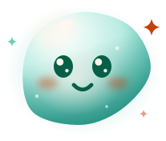

33 estados sobre la misma geometría. Ninguna pose reemplaza un trazo del SVG original: todas lo deforman. Tocá cualquier celda para verla en grande.

neutral
Prueba de fidelidad. A la izquierda el archivo que ya está en
producción; a la derecha el rig con la pose neutral y el bucle de
reposo apagado. Tienen que ser indistinguibles: mismos paths, mismos radios,
mismo gradiente. Si difieren, el rig alteró la geometría en vez de deformarla.